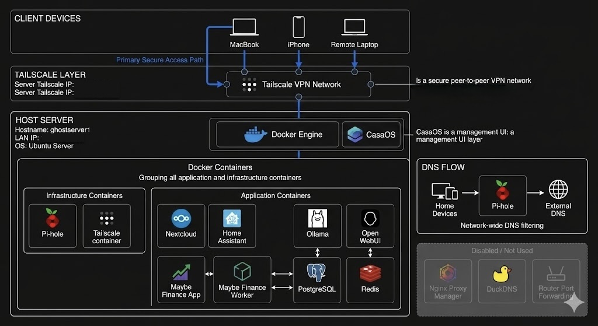

← Back to Portfolio
Homelab Infrastructure Project
Overview
This homelab is a self-hosted infrastructure environment designed around a VPN-first security model using Tailscale. All services are containerized using Docker and run on a single Ubuntu server. The goal is to provide secure remote access, service isolation, and practical experience with modern DevOps and networking tools. The entire system follows a zero public exposure approach, meaning no services are directly exposed to the internet.
Infrastructure
- Operating System: Ubuntu Server
- Local IP: 192.168.1.71
- Remote Access IP: Tailscale (100.73.1.42)
- Container Platform: Docker
Network Architecture
The homelab uses a VPN-first access model powered by Tailscale. All remote connections follow a secure encrypted tunnel into the homelab server, which then routes traffic internally to Docker services.
Network Diagram
Homelab traffic flow visualization:

Client Device → Tailscale VPN → Homelab Server → Docker Services
Containerized Services
Infrastructure Services
- Pi-hole – Network-wide DNS filtering and ad blocking
- Tailscale – Secure VPN layer for remote access
- CasaOS – Lightweight Docker management interface
Application Services
- Nextcloud – Self-hosted file storage
- Home Assistant – Smart home automation
- Ollama – Local LLM inference server
- Open WebUI – Interface for Ollama
- Maybe Finance Stack – Personal finance system
Security Design Principles
- No public port forwarding enabled
- No direct internet exposure
- All access via Tailscale VPN
- Container isolation using Docker
- Minimal attack surface design
Purpose
- Learning DevOps & networking
- Secure infrastructure design practice
- Self-hosting applications
- Cybersecurity portfolio project
Summary
This homelab demonstrates a modern self-hosted architecture built around secure VPN access, containerized services, and isolated infrastructure design.